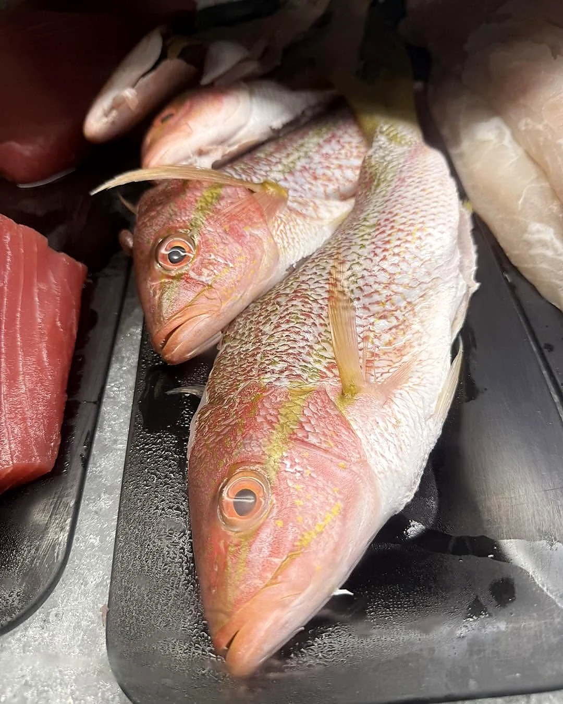
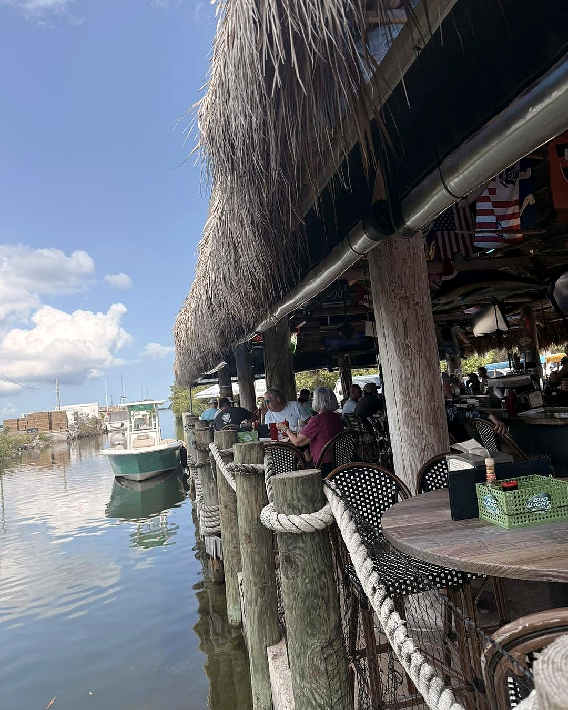

FRESHCATCH

Local fish, shrimp, stone crab and Keys seafood — straight from the boat to the market at Mile Marker 25.
TODAY'SMARKET
Last updated: Today
🎣 Today's catch is being updated — call the Shack for what's fresh.
Call Tonio'sTHE SHACKMARKET
Tonio's runs a working seafood market out of the shack at Mile Marker 25. What's available changes daily based on the boats, the weather and what's running in the Keys.
Stone crab season runs October 15 – May 1. Florida lobster season runs August 6 – March 31. Pink shrimp and local reef fish are available most of the year.
Call the Market — (305) 745-3322
Typical Seasonal Availability
Market Info
- Fresh catch sold by the pound at market price
- Cleaning and filleting available on request
- Call ahead to check availability and reserve
- Available at the shack — no online ordering
QUESTIONS& ANSWERS
What seafood is available today?
The catch board above reflects today's market inventory. Call (305) 745-3322 to confirm before you make the drive.
Can I buy fresh seafood to take home?
Yes. Tonio's operates a working seafood market at the shack. We sell fresh local catch by the pound. Call ahead to check what's in.
Is the seafood cleaned and filleted?
We can clean and fillet your fish at the market. Just ask when you call or stop in.
When is stone crab and lobster season?
Stone crab claw season runs October 15 through May 1. Florida lobster season runs August 6 through March 31.
FINDTHE SHACK
Mile Marker 25 on US-1, Summerland Key, Florida. Right on the water. Come by car, by boat or follow the sound of the music.
